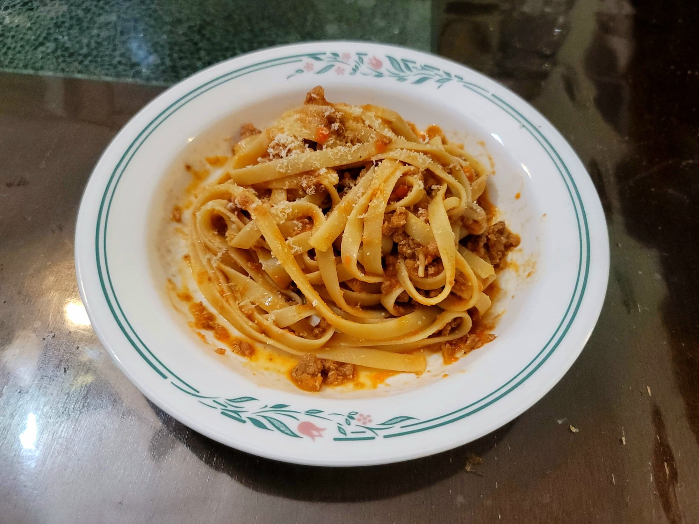

Tagliatelle alla Bolognese

Ingredients:
- 1 lb Dried tagliatelle, or substitute Dried fetuccini
- 3-4 cups Bolognese Sauce
- Parmesan cheese to taste, freshly grated
Instructions:
- Bring a large pot of salted water to a boil. Then add in the pasta and cook until al dente or to preference, about 12-14 minutes.
- While the pasta cooks, add the bolognese to a large pan over medium heat to warm up, stirring often.
- Once the pasta is cooked, transfer to the pan with the sauce, along with 1/2-1 cup of pasta water, or to preference. Sprinkle over some parmesan and toss until the sauce has emulsified with the pasta water. Serve immediately.